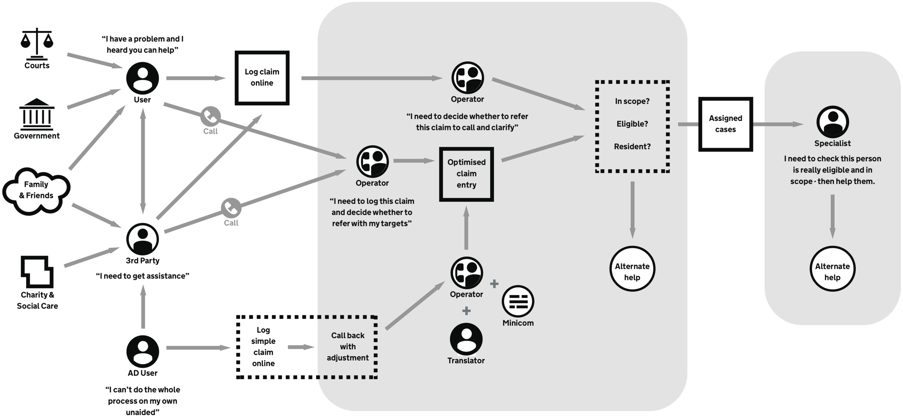
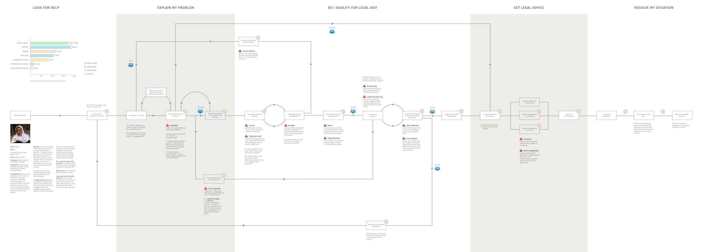
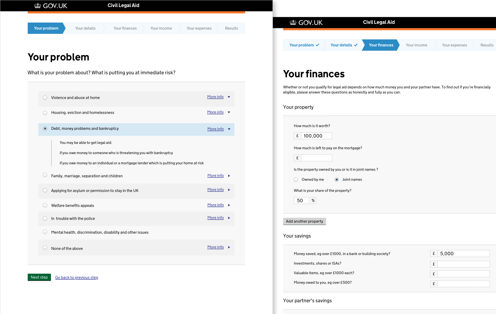
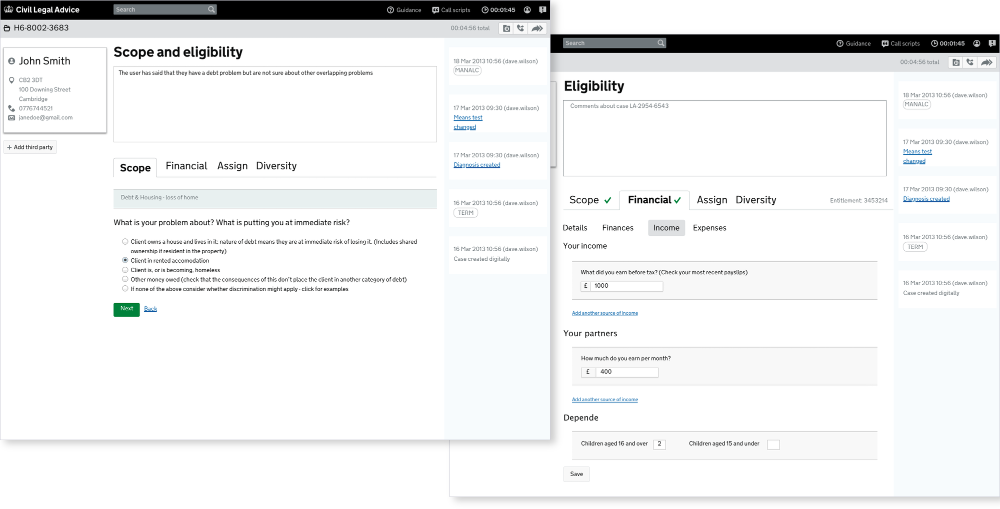
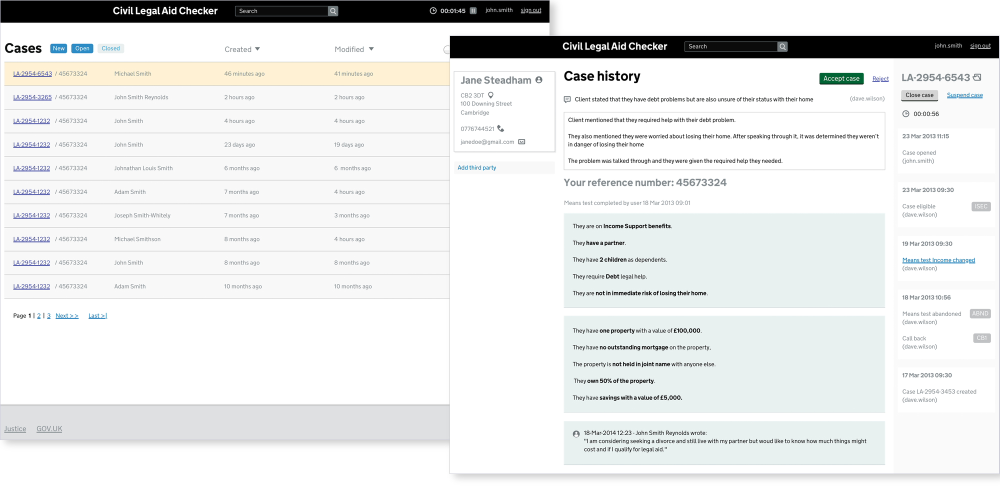
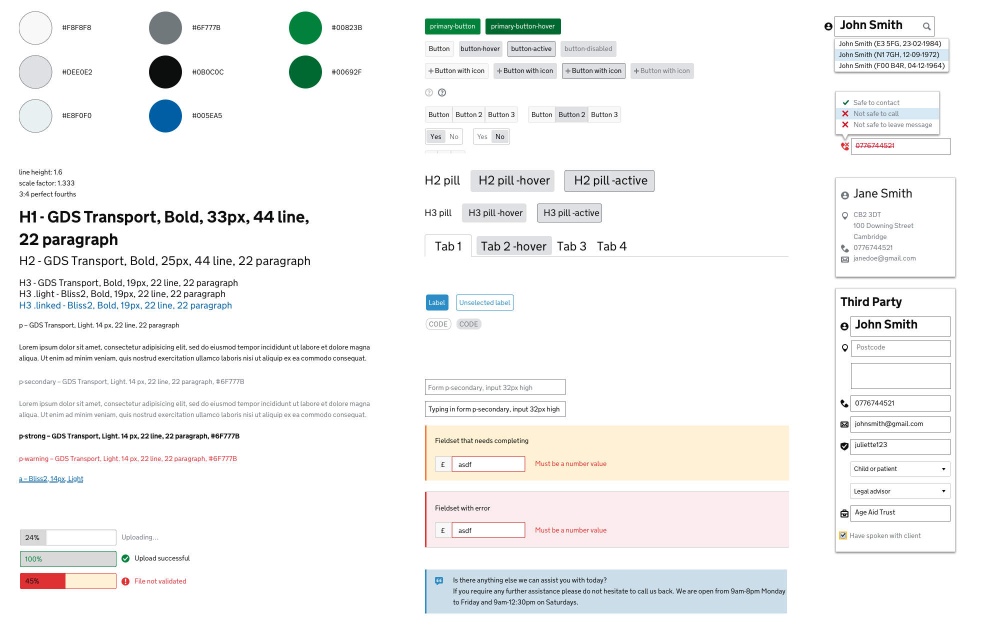

Ministry of Justice Civil Legal Aid

Civil Legal Aid was the first completely redesigned government digital service which helped people in need get free legal help.

Through extensive user research and service design we mapped out and completely overhauled the entire service.

Users now had a way to fill out the simplest form possible rather than spend hours with multiple solicitors and legal advisors.

The administrative backend was completely built from scratch sprint by sprint and with it developed the first government digital transformation admin design system.

